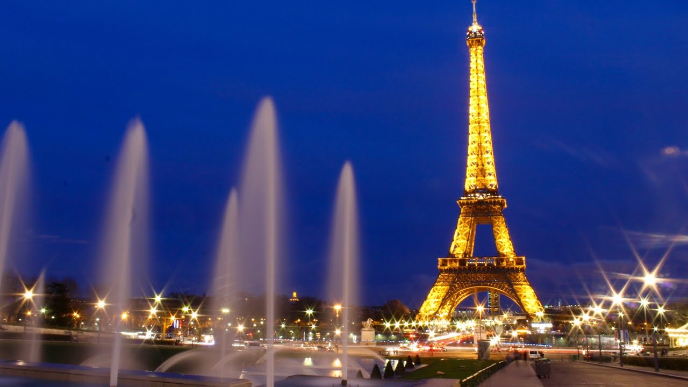
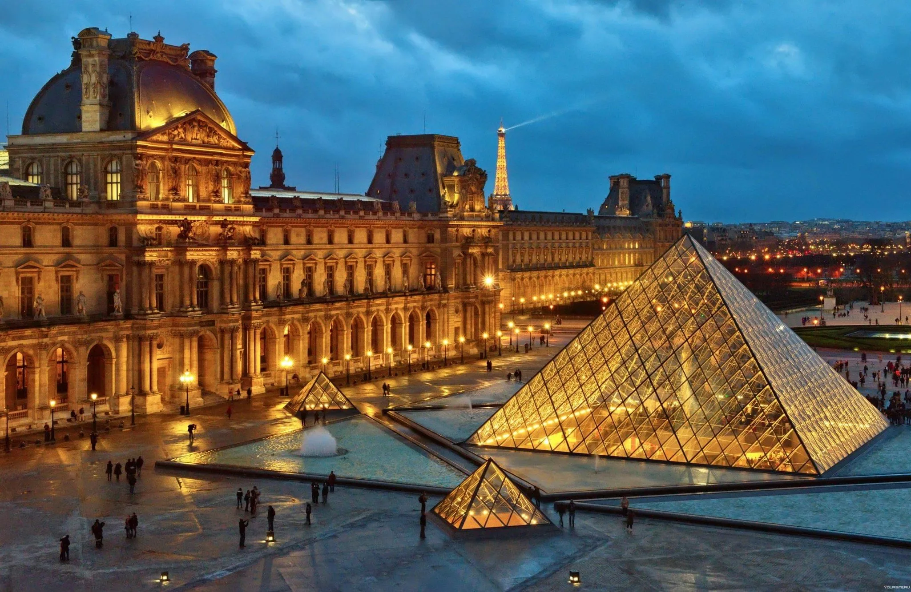
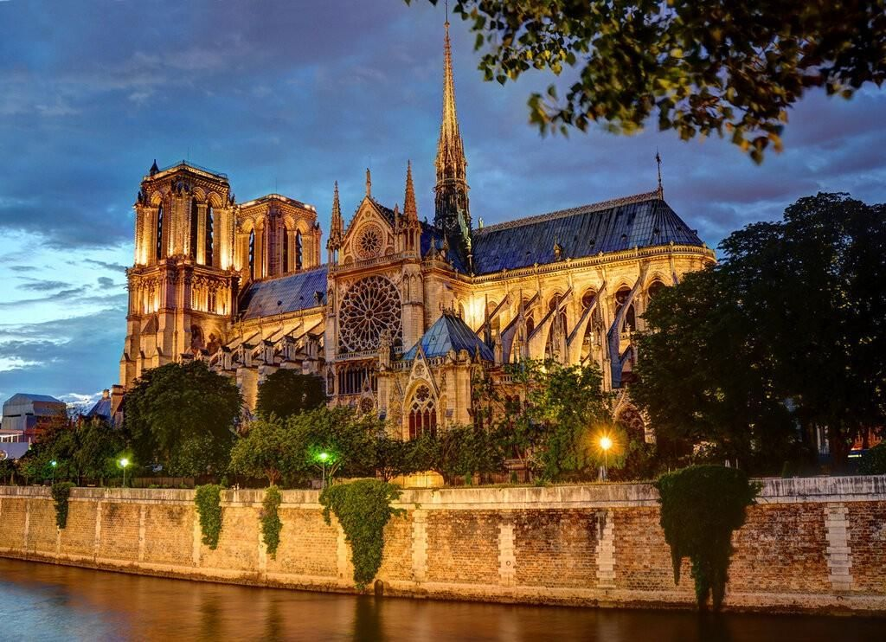
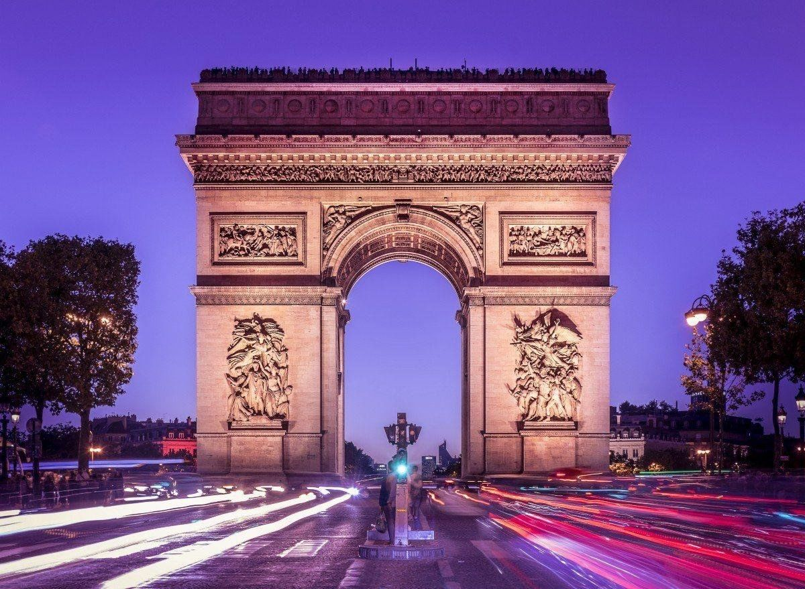

Париж
Париж - столица и крупнейший город Франции, один из самых романтичных и посещаемых городов мира.
- Население: 2,1 млн
- Основные достопримечательности: Эйфелева башня, Лувр, Собор Парижской Богоматери
- Язык: французский
- Валюта: евро
Основные достопримечательности
| Название | Описание | Расположение |
|---|---|---|
| Эйфелева башня | Металлическая башня, символ Парижа. | Шамп-де-Марс |
| Лувр | Один из крупнейших художественных музеев мира. | Центр Парижа |
| Собор Парижской Богоматери | Готический собор на острове Сите. | Остров Сите |
| Триумфальная арка | Монумент на площади Шарля де Голля. | Площадь Шарля де Голля |



